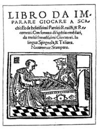
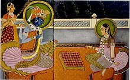
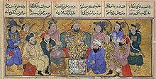

Confira o original na wikipedia.
A história do xadrez tem origem controversa, mas é possível afirmar que o jogo foi inventado na Ásia. Atualmente, a versão amplamente difundida é a de que teria surgido na Índia com o nome de Chaturanga e dali se espalhou para a China, Rússia, Pérsia e Europa, onde se estabeleceram as regras atuais. Pesquisas recentes indicam uma possível origem na China do século III a.C., na região entre o Uzbequistão e a Pérsia antiga (atual Irã). Um dos primeiros registros literários sobre o xadrez é o poema persa Karnamak escrito no século VI, e, a partir desta época, sua evolução é melhor documentada e amplamente aceita no meio acadêmico. Após a conquista da Pérsia pelos árabes, estes assimilaram o jogo e o difundiram no ocidente levando-o ao norte da África e Europa e até as atuais Espanha e Itália por volta do século X, de onde se expandiu para o resto do continente chegando até a região da Escandinávia e Islândia. No oriente, o xadrez se expandiu a partir da sua versão chinesa, o Xiangqi, para a Coreia e Japão no século X. Por volta do século XV o jogo estava amplamente difundido pela Europa e, dentre as variantes existentes do jogo, a europeia foi a que mais se destacou devido à rapidez proporcionada pela inclusão da Dama e do Bispo. Apesar de já existir literatura anterior sobre o xadrez na época, foi neste período que começaram a surgir as primeiras análises de aberturas em virtude das novas possibilidades do jogo. As partidas começaram a ser registradas com maior frequência e mais estudos da teoria do xadrez foram publicados. No século XVIII foram fundados os primeiros clubes para a prática do xadrez e federações esportivas na Europa e, em decorrência do grande número de pequenos torneios acontecendo por todo o continente, em 1851 foi realizado o primeiro torneio internacional em Londres. A popularidade das competições internacionais levou à criação do título de campeão mundial, vencido por Wilhelm Steinitz em 1886, e, em 1924, foi fundada a Federação Internacional de Xadrez (FIDE), em Paris, que organizou a primeira Olimpíada de Xadrez e o mundial feminino, vencido por Vera Menchik. Com o avanço da computação a partir da década de 1950, começam a surgir os primeiros programas que jogam xadrez, que acompanharam a evolução do processamento de informação e introduziram o jogo na era moderna com competições on-line e acesso facilitado às análises das partidas.
A origem do xadrez ainda é motivo de debate entre os historiadores do enxadrismo,[1][2][3] mas a teoria mais difundida[4] é que tenha sido criado na Índia, durante o Império Gupta por volta do século VI.[5] Esta teoria é atestada pelos primeiros registros literários persas e pela análise da etimologia das palavras empregadas no jogo e sua evolução conjunta com o xadrez.[6] Entretanto, teorias alternativas propõem que o xadrez tenha sido criado num período anterior, em diferentes localidades como China,[7] Irã[8] e Afeganistão.[9] Estas versões exploram evidências arqueológicas, militares[10] literárias e recursos da filogenética[11] para contestar a teoria indiana. As similaridades entre o chaturanga e o Xiangqi, considerado a versão chinesa do xadrez, são exploradas indicando que estes jogos poderiam ter se influenciado mutuamente através do contato entre as civilizações através da rota da seda, assimilando alguns aspectos de suas regras e formando versões híbridas,[12] o que poderia remontar à Grécia Antiga e à conquista de Alexandre, o Grande, sobre a Ásia Menor no século a.C.[13] Existe a perspectiva de que, no futuro, novas análises da literatura existente e descoberta de mais artefatos arqueológicos na Índia e China possibilitem esclarecer em definitivo a origem do xadrez.[3]
Segundo Harold Murray, a análise filológica conecta o jogo com clareza à palavra chaturanga,[14] que designava as quatro partes do exército indiano - bigas, elefantes, cavalaria e infantaria — desde o século V a.C.[15] Inicialmente, o jogo era praticado sobre o tabuleiro do Ashtāpada, um outro jogo cujo significado foi estabelecido por volta do século II a.C. e sugeria um objeto familiar.[16] O chaturanga é considerado o jogo mais antigo com características essenciais da definição do jogo encontradas nas versões posteriores - dois jogadores se enfrentando em um arranjo inicial e simétrico das peças, com peças de movimentos diferentes e a vitória dependendo da captura de uma única peça.[17] Não está claro se o chaturanga utilizava dados para designar seus movimentos, embora a grande maioria dos jogos indianos os utilizasse.[18] Uma das lendas a respeito da origem indiana do xadrez, contada no poema persa Chatrang nâmag (c. século VII) e no livro persa Épica dos Reis (c. século XI) relata que um rajá indiano[nota 1] enviou seu vizir Tâtarîtos à corte de Cosroes I Anôšag-ruwân, xá da Pérsia, com tributos e um desafio para descobrir as regras do chaturanga. Cosroes pediu por quatro dias para resolver o enigma, tendo obtido êxito no tempo previsto.[19] [20][nota 2] O livro Shāh-nāmeh descreve ainda mais duas lendas a respeito da origem do xadrez. A primeira conta a história do brâmane Sessa ibn Daher, que criou o jogo a pedido de um rajá indiano e, como recompensa, pedira um grão de trigo na primeira casa do tabuleiro, dobrando progressivamente a quantidade a cada nova casa.[nota 3] A outra história conta que o jogo foi inventado a pedido da mãe do rei Gav para provar que este não havia provocado a morte do irmão Talhend durante uma batalha, reconstituída sobre o tabuleiro.[22]
Historiadores iranianos questionam a ausência de evidências arqueológicas indianas anteriores ao século IX, enquanto que evidências persas já foram encontradas a partir do século VI, como uma hipótese da origem do xadrez pertencer à Pérsia, atual Irão.[25] De fato, apesar da literatura indiana anterior ao século VI ser rica, ela não faz menção específica ao chaturanga como nome de um jogo, sendo que as evidências mais claras neste sentido surgiram somente no século IX.[26] A etimologia também não seria objetiva a respeito do uso da palavra em sânscrito chaturanga, que significaria somente "exército", não ficando claro se é uma referência ao xadrez ou a outro jogo. A influência persa na nomenclatura, de cuja língua (pahlavi) provém a maioria das palavras relacionadas ao xadrez, também é considerada como argumento a favor da teoria iraniana.[27] A figura do elefante como justificativa para a origem indiana também é questionada. Esses animais não eram exclusividade da Índia, sendo conhecidos desde a dinastia ptolemaica no Egito, e foram regularmente utilizados nos exércitos persas.[28] As obras persas Chatranj namâg e Shāh-nāmeh, que indicam a origem do jogo como de um outro reino a oeste, relatado como Hind e que trouxe o chaturanga para corte persa, poderiam indicar uma província oriental do império persa que inclui a província moderna do Sistão-Baluchistão, que durante o império Aquemênida era uma extensão da província do Cuzistão.[8]
Ver artigo principal: Xadrez na Pérsia.
O poema Mâdayân î chatrang, ou simplesmente Chatrang nâmag, é a primeira evidência literária que descreve as peças de xadrez e a chegada do chaturanga na Pérsia, embora a datação do texto seja controversa - historiadores estimam que ele date entre os séculos VII e IX.[29] Por volta do século VII outro poema, Xusraw Kawadan ud redag, escrito na língua pahlavi, menciona o chaturanga, o Ashtāpada e o nard, antecessor do gamão. Cosroes foi o Xá da Pérsia de 531 a 579 e entre as possibilidades existentes, seria o primeiro a receber um conjunto de peças de xadrez da Índia.[nota 4] Na região da Pérsia foram encontrados os vestígios arqueológicos mais antigos do jogo, localizados no sítio arqueológico de Afrassíabe, perto da cidade de Samarcanda, no atual Uzbequistão. As denominadas peças de Afrassíabe são sete em número (1 Rei, 1 Torre, 1 Vizir, 2 Cavalos e 2 Peões), com um tamanho médio de 3 cm de altura, e foram datadas do século VII.[31] As primeiras adaptações ao chaturanga foram a tradução do jogo, que passou a se chamar Chatrangue, e das peças que mantiveram o significado indiano de representar no jogo os quatro componentes do exército na época: bigas, cavalaria, elefantes montados e soldados além do soberano e seu conselheiro.[32] Os persas também introduziram expressões no jogo como Shāh, atual xeque, utilizado ao ameaçar o Rei adversário, Shāh-mat (xeque-mate) que o Rei foi emboscado, capturado ou morto, o que indica o término da partida[33] e Shāh-rukh, que indica uma ameaça dupla ao rei e à Torre, que até então era a peça mais forte.[34] Desde o início o jogo foi popular, tendo sido criadas variantes citadas em diferentes manuscritos, como por exemplo o Murûj adh-dhahab e a enciclopédia Nafâ'is al-funûn, que descrevem um total de sete variantes praticadas na época, apesar de terem sido desenvolvidas já sob o domínio árabe sobre a Pérsia. A primeira descreve o xadrez oblongo, o xadrez decimal, o circular, celestial (al-Falakîya) e o limbo (al-Jawârhîya). A segunda descreve também o Xadrez cidadela (al-Husûn) e o xadrez grande (al-Kabîr) conhecido posteriormente como Xadrez de Tamerlão.[35] Os persas introduziram o Chatrangue no Império Bizantino por volta do século VII que foi assimilado sob o nome de zatrício (em grego: ζατρίκιον; romaniz.: zatrikion). Porém, a primeira evidência do zatrício do qual é possível estabelecer uma data correta é do século XII, em uma passagem da biografia do imperador Aleixo I Comneno, escrita por sua filha Ana Comnena. Não se conhece em detalhes as regras do jogo que era praticado na corte bizantina e com a derrocada do império em 1453, a versão existente do jogo foi substituída pela versão turca que viria a ser posteriormente substituída pela versão europeia.[36]
Quando os árabes dominaram a Pérsia, em 651, o profeta Maomé já havia falecido, o que provocou um longo debate entre os teólogos islâmicos sobre a legalidade da prática do jogo. Por fim, permitiu-se suas práticas sob determinadas condições, que incluíam não ser apostado, não levar a disputas ou linguajar impróprio e não representar as peças figurativamente.[38] O jogo tornou-se popular entre califas, como Harune Arraxide, que patrocinavam os melhores jogadores de sua corte, e, no final do século IX, já era amplamente aceito e difundido no mundo árabe, sendo levado para o norte da África, Sicília e Península Ibérica. Surgiram então os primeiros grandes jogadores, notáveis em suas épocas, pela capacidade de jogar mesmo dando vantagens de peões até torres para seus adversários. Al-Adli, Rasis e Alçuli foram os grandes nomes deste período, tendo-se destacado tanto no xadrez como nas artes e ciências.[39][40] Os árabes foram os primeiros a estudar com um método analítico as fases do jogo de aberturas, meio-jogo e finais, buscando explorar as fraquezas existentes em cada uma delas. Criaram inúmeros problemas, denominados mansūbāt, representando os finais típicos de uma partida, com a utilização das regras do Xatranje, versão arabizada do Chatrangue persa. Desde período também é a primeira referência a uma partida de xadrez às cegas, relatado por Alçafadi num manuscrito árabe do século XIV.[40][41]
A análise etimológica das peças de xadrez indica que o xadrez foi introduzido na Rússia a partir do Chatrangue, de origem persa. Enquanto na Europa a figura do fers já havia sido transformada na Rainha, a peça permanecia masculinizada na Rússia como ferz, e o Bispo e a Torre figurados como um elefante e um barco, respectivamente. As evidências arqueológicas mais importantes foram escavadas na cidade de Novgorod, indicando que o jogo foi introduzido por volta do século IX.[42] Quando os europeus tiveram contato com a cultura russa, o jogo já estava plenamente estabelecido e a versão europeia das regras lentamente substituiu as regras do Chatrangue, embora ainda no século XVIII algumas tribos no extremo oriente fizessem uso das regras antigas. Assim como no Europa, a monarquia também demonstrava interesse pelo jogo, patronando os melhores jogadores. Os czares Ivã IV da Rússia, Catarina, a Grande e Pedro I da Rússia estão entre os monarcas que demonstraram tal interesse. A teoria atual do xadrez estabelece que o Xiangqi seja o resultado da assimilação do chaturanga. O objetivo da variante chinesa é similar ao jogo indiano, i.e. capturar o Rei do oponente, que é denominado "general". O xiangqi também incorpora elementos do jogo de tabuleiro Go, conhecido na China desde o século VI a.C., no qual as peças são movidas nas interseções das linhas do tabuleiro, ao invés das casas. No xadrez chinês as peças têm usualmente a forma de disco, como no jogo de Damas, sendo diferenciadas por ideogramas na parte superior.[43] Na China, o chaturanga foi possivelmente introduzido pela rota da seda entre a região de Caxemira e o Império Chinês por volta do século VIII.[44] Entretanto, posteriormente o império chinês se fechou ao contato externo, dificultando a penetração do jogo, o que só foi modificado após a Segunda Guerra Mundial e o estreitamento das relações externas com a União Soviética.[45]
O Xatranje foi introduzido na Europa pelos árabes por volta do século X, através da conquista da Espanha, onde rapidamente se popularizou, alcançando todo o continente europeu já no final do século XI.[46] As restrições religiosas à prática do xadrez se mantiveram, apesar de continuarem a serem desobedecidas tanto pela corte europeia quanto pelo clero. O primeiro registro literário em solo europeu, o poema Versus de Scachis, encontrado num monastério na Suíça, descreve o movimento das peças de xadrez, as regras do jogo e o tabuleiro com o padrão dicromático empregado atualmente. As regras descritas ainda eram as mesmas do Xatranje; entretanto, este poema faz primeira menção à Dama (Regina, em latim), embora ainda com os mesmos movimentos do fers e regras diferentes para a promoção do peão, que impediam duas Damas sobre o tabuleiro, visando manter a monogamia real.[47] Assim como entre os teólogos islâmicos, a prática do xadrez foi discutida entre os teólogos católicos e proibida, apesar das divergências da interpretação do direito canónico. Uma carta entre Pedro Damião, Bispo de Óstia em aproximadamente 1061, para o Papa eleito Alexandre II discutia o assunto.[48][49] Até aproximadamente o século XIV, a prática do xadrez foi proibida em várias ocasiões em diferentes países (França, Rússia, Inglaterra e Alemanha) e religiões (Igreja Ortodoxa,[50] judaísmo[48] e catolicismo[49]). Lentamente, o jogo começou a ser aceito pela nobreza, sendo considerado um entretenimento apropriado para cavaleiros, soldados, cruzados e menestréis.[39][48] Era permitido também que um homem visitasse o quarto de uma Dama com a intenção de jogar xadrez.[46] Por volta de 1250 surgiram os primeiros sermões que utilizavam o xadrez como uma metáfora para o ensino de ética e moral. Estes trabalhos eram denominados moralidades e se tornaram muito populares na época. A primeira obra do gênero foi Quaedam moralitas de scaccario per Innocentium papum ("A Moralidade Inocente"), de autoria atribuída ao Papa Inocêncio III (1163-1216), um prolífico escritor de sermões, e posteriormente a um frei franciscano chamado João de Gales (1220-1290).[51][52] Na segunda metade do século XIII, o monge Jacobus de Cessolis publicou os sermões Liber de Moribus Hominum et Officiis Nobilium Sive Super Ludo Scacchorum ("Livro de costumes dos homens e deveres dos nobres ou o livro de xadrez"), um trabalho que se tornou muito popular, sendo traduzido para várias línguas e a base do livro The Game and Playe of the Chesse, um dos primeiros livros impressos na língua inglesa.[48]
Por volta do final do século XV, o jogo sofreu a principal alteração de sua história, com a substituição dos lentos Fers e Fil pela Dama e Bispo, respectivamente. Esta nova versão do jogo surgiu no sul da Europa e rapidamente se popularizou pelo continente, tornando obsoleto todo o conhecimento adquirido previamente sobre a teoria de aberturas e finais em virtude da grande mobilidade das novas peças.[53] Surgiram então as primeiras análises e livros contemplando novas regras de Luis Ramírez de Lucena em Repetición de Amores y Arte de Axedrez (1497), do português Pedro Damião em Questo Libro e da Imparare Giocare a Scachi (1512) e de Ruy López de Segura em Libro de la Invención Liberal y Arte del Juego del Axedrez (1561), sendo este último o mais forte jogador da época[54] e primeiro a formalizar as regras do roque num único movimento[55] e a captura en passant.[56] Outros nomes surgiram como Paolo Boi, Polerio e Greco que eram patronados em diferentes cortes, produzindo uma grande variedade de manuscritos com novas teorias em aberturas.[53]
Em 1749, Philidor publicou seu livro L'analyse des échecs, discutindo em detalhes a estratégia como um todo e a importância da estrutura de peões no jogo como um fator posicional. Seu livro incluía catorze partidas fictícias e várias anotações de meio jogo discutindo características como peões isolados, dobrados, atrasados, passados e ilha de peões.[57] Philidor foi o melhor enxadrista de seu tempo e seu livro permaneceu uma obra de referência do xadrez moderno por mais de um século, sendo traduzido para vários idiomas.[58] Suas ideias deram base para a primeira escola de pensamento do xadrez, a Escola de Philidor. Apesar disto, a escola italiana, desenvolvida por Ponziani, Lolli e Del Rio por volta de 1750, preconizavam, em oposição a Philidor, um desenvolvimento rápido das peças e o ataque direto sobre o Rei adversário, dominando o desenvolvimento da teoria até o final da década de 1840.[57] Nesse mesmo período, surgiram em Londres e Paris as primeiras cafeterias que popularizaram a prática do jogo. O Slaughter's (em Londres) e o Café de la Régence (em Paris) presenciaram os primeiros confrontos entre os melhores jogadores do período, como Stamma, Kermeur e Philidor.[59] Já no início do século XVIII, surgiram os primeiros estabelecimentos voltados exclusivamente para a prática do xadrez, os clubes de xadrez em Londres, Praga, Viena e Paris. Isto aumentou a necessidade de formalização das regras, visando a realização de torneios nas agremiações - a partir de 1803 os clubes começaram a publicar seus conjuntos de regras.[60] Por volta da década de 1840, o centro do xadrez europeu ainda era na França, que detinha os melhores jogadores da época, como Bourdonnais e Saint-Amant. Porém, após a vitória de Staunton sobre o último, a Inglaterra ascendeu como centro mundial do xadrez, iniciando a escola de pensamento inglesa.[61] Lasa, Staunton e Jaenisch (de modo independente) publicaram os primeiros livros de regras para o xadrez no final deste período, que foram a base das competições subsequentes. Lasa foi co-autor do Handbuch des Schachspiels (1843), utilizado na língua alemã, e Staunton publicou o livro Chess Praxis (1860).[60][62]
Em 1851 foi disputado em Londres o primeiro internacional, vencido por Adolf Anderssen.[63] A partir de então, vários torneios foram realizados nas principais cidades da Europa, como Londres (1862),[63] Paris (1867),[64] Baden-Baden (1870),[65] Viena (1873),[66] Berlim (1881)[67] e Hastings (1895).[68] Nesse período surgiram também os primeiros enxadristas profissionais, primeiro em Londres, principal centro do xadrez na época, e depois em outras cidades. Inicialmente, estes jogadores disputavam partidas em seus clubes, muitas vezes em simultâneas e às cegas, cobrando pequenos valores por isso. Com os torneios se popularizando, os melhores jogadores dedicaram-se a estas competições, como Joseph Henry Blackburne, Louis Paulsen, Wilhelm Steinitz, Johannes Zukertort, Cecil Valentine De Vere, Szymon Winawer, Isidor Gunsberg, Mikhail Chigorin, Samuel Rosenthal e Johannes Minckwitz.[nota 5] Em 1886 foi disputado entre Steinitz e Zukertort a primeira disputa oficial pelo título de campeão mundial, apesar do termo já ter sido empregado anteriormente.[71] Steinitz, o melhor jogador da época, venceu a disputa e manteve o título até 1894 quando foi derrotado por Emanuel Lasker.[72] Surgem então novos jogadores, além de Lasker, que utilizavam um estilo de jogo mais posicional, conhecido como escola moderna do xadrez, com nomes como: Siegbert Tarrasch, Frank Marshall, Dawid Janowski, Carl Schlechter, Akiba Rubinstein, Harry Nelson Pillsbury e Géza Maróczy.[73] Apesar dos primeiros conceitos da escola ortodoxa terem sido propostos por Steinitz, considerado fundador desta, somente essa geração de jogadores reconheceu os trabalhos de Steinitz, incluindo Lasker, seu sucessor.[74] Surgiu então o prodígio cubano José Raúl Capablanca, que conquista o título mundial de Lasker em 1921, pondo um fim no domínio germânico de jogadores europeus. Capablanca manteve uma invencibilidade de oito anos em competições, sendo considerado ídolo do esporte e derrotado somente em 1927 por Alexander Alekhine.[75] Após a Primeira Guerra Mundial, o xadrez começou a ser revolucionado por um novo estilo, determinado hipermoderno, dos teóricos Richard Réti, Savielly Tartakower, Gyula Breyer e notoriamente Aaron Nimzowitsch, principal autor desta escola com a obra Mein System (Meu Sistema), que preconizava o controle do centro à distância e a utilização dos bispos flanqueados e Aberturas Abertas.[76]
A partir do torneio de São Petersburgo de 1914, cresceram as iniciativas para a criação de uma entidade reguladora para o esporte. Finalmente, foi criada a FIDE, em 1924. O primeiro evento organizado pela entidade foi a Olimpíada de Xadrez, vencida pela equipe húngara, e o Campeonato Mundial Feminino de Xadrez vencido por Vera Menchik, realizados em Londres no ano de 1927.[77][78] Os congressos da FIDE de 1925 e 1926 já manifestavam o interesse de organizar também o mundial masculino, porém o fundo de premiação de $10.000 dólares exigido por Capablanca era impraticável pela entidade, que decidiu criar um título em paralelo de "Campeão da FIDE" em 1928. Bogoljubow venceu a disputa contra Euwe, entretanto foi esquecido após sua derrota no mundial seguinte de 1929 contra Alekhine, então campeão mundial após ter derrotado Capablanca no ano de 1927. Alekhine concordava em disputar o título sob organização da FIDE, exceto contra Capablanca, onde exigia as mesmas condições da partida realizada em 1927.[79] Após a revolução russa, os líderes da recém formada União Soviética incentivaram o ensino do xadrez para as grandes massas para treinamento da mente e preparo para a guerra em tempos de paz.[80] O Estado tomou controle da organização de competições, incluindo eventos internacionais como em Moscou em 1925.[81] O incentivo governamental propiciou a criação da Escola soviética de xadrez, liderada pelo futuro campeão mundial Mikhail Botvinnik. A escola soviética preconizava um preparo psicológico e físico que incluía também análise minuciosa das partidas dos oponentes para explorar as fraquezas e fortalecer sua própria estratégia para o confronto.[82]
Após a Segunda Guerra Mundial, a FIDE reiniciou suas atividades com a organização do mundial de 1946. Entretanto, Alekhine faleceu antes da competição, deixando o título vago. Então, no congresso da entidade de 1947, foram decididos os participantes de um torneio que apontaria o novo campeão mundial, agora contando com o apoio da federação soviética. A FIDE indicou Paul Keres, Reuben Fine, Mikhail Botvinnik, Samuel Reshevsky, Vasily Smyslov e Max Euwe para a disputa do ano seguinte.[83] Botvinnik venceu o torneio, dando início a uma era de campeões mundiais soviéticos até a década de 1990. Este domínio foi apenas interrompido em 1972, no auge da guerra fria, quando o prodígio estadunidense Bobby Fischer se tornou campeão ao derrotar Boris Spassky.[84] O confronto, apelidado de Match of the Century, teve grande repercussão na mídia, provocado um significativo aumento do interesse pelo xadrez, sobretudo nos Estados Unidos.[85] Entretanto, Fischer não viria a defender o título em 1975 devido à FIDE ter recusado aceitar as condições para a realização da partida por ele propostas,[nota 6] sendo o título concedido ao desafiante Anatoly Karpov.[87] Karpov defendeu seu título com sucesso três vezes, sendo derrotado em 1985 para Garry Kasparov, que se tornou o mais jovem campeão mundial de todos os tempos.[88] Kasparov defendeu o título com sucesso três vezes contra Karpov. Porém, em 1992, quando defenderia o título contra Nigel Short, rompeu com a FIDE vindo a fundar com o desafiante Short a PCA com o objetivo de regular a disputa do título mundial. Kasparov e Short alegaram que a FIDE não os incluiu nas negociações com os patrocinadores para disputa do match, sendo este o motivo para fundarem a associação rival. Financiada pela Intel, a PCA organizou duas disputas do título em 1993, no qual Kasparov manteve o título contra Short, e em 1995 no qual novamente Kasparov manteve o título contra Anand.[89] A FIDE continuou a organizar a disputa do título mundial, e em 1993 Karpov recuperou o título disputado contra Jan Timman. Com o colapso da PCA em 1997 devido à falta de patrocinadores, iniciaram-se as discussões para reunificação do título que ocorreu em 2006 quando Vladimir Kramnik, campeão pela PCA, venceu Veselin Topalov da FIDE.[90][91][92] O atual campeão é Magnus Carlsen, que conquistou título em 2013.[93]
Ao longo do tempo, o duelo entre as máquinas (computadores) e o homem foi-se acentuando, e o xadrez não foi exceção. As primeiras tentativas desta interação datam do século XIX, com tentativas de notação automática de uma partida através de dispositivos eletromagnéticos sobre o tabuleiro, conectados a um dispositivo de impressão. Com o advento dos primeiros computadores no início de 1950, os cientistas da computação logo iniciaram o desenvolvimento de programas dedicados ao xadrez.[94] Com o avanço da informática, os motores mais sofisticados passaram a incluir funções de avaliação, considerando a posição das peças de modo a buscar na árvore de possibilidades um lance ótimo de acordo com a estratégia do jogo.[95] Em 1974 foi disputado o primeiro campeonato mundial dedicado exclusivamente a computadores, vencido pelo programa soviético Kaissa. A partir de então, tais competições tornaram-se rotineiras e com o avanço da computação, o confronto homem-máquina atingiu o nível dos Grandes Mestres: Bent Larsen foi derrotado em 1988 por um computador em um torneio.[96] Em 1997, o supercomputador Deep Blue venceu Kasparov, campeão mundial pela PCA, em um match de seis partidas. O confronto teve grande cobertura da imprensa e foi considerado por Frederic Friedel como "o mais espetacular evento da história do xadrez".[97] Entretanto, Kasparov questionou alguns dos movimentos realizados no computador especificamente no jogo dois, suscitando dúvidas a respeito da intervenção humana durante as partidas, o que foi negado pela IBM.[98] Desde então, tornaram-se mais frequentes as vitórias de softwares para a prática do xadrez contra Grandes Mestres, mesmo em computadores com capacidade de processamento inferiores a de Deep Blue.[96]
Confira como alinhar-texto-CSS-Propriedade-text-align-left-right-center-justify.